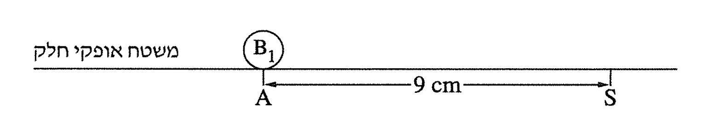
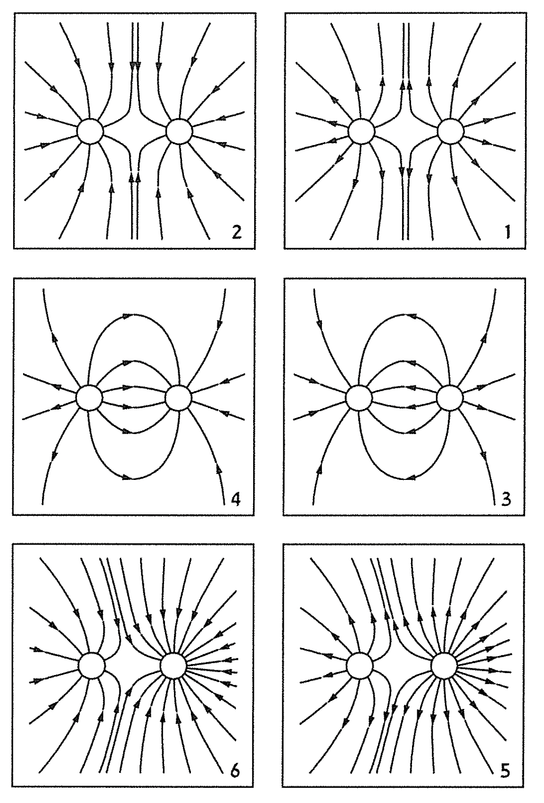

שאלה 1
כדור קטן B1 מוחזק בנקודה A על משטח אופקי חלק. מסת הכדור m1 ומטענו q1.
נתון: בנקודה S על המשטח האופקי נמדד פוטנציאל חשמלי VS = -1000V.
המרחק בין הנקודות S ו-A הוא 9 cm (ראו תרשים).

חשבו את גודל המטען q1 וקבעו את סימנו. (6 נקודות)
חשבו את גודל השדה החשמלי שהמטען יוצר בנקודה S. (5 נקודות)
כדור קטן נוסף, B2, שמסתו m2 ומטענו q2, מובא מן האין-סוף אל הנקודה S ומוחזק בה.
נתון: m2 = 2m1, q2 = 2q1.
חשבו את העבודה שהושקעה בהבאת הכדור B2 מן האין-סוף לנקודה S (הזניחו את כוח הכבידה). (7 נקודות)
בתרשים 2 שלפניכם מוצגים שישה איורים המתארים קווי שדה חשמלי שקול שנוצר על ידי שני כדורים טעונים.

קבעו איזה מן האיורים 1-6 מתאר נכונה את השדה השקול שנוצר על ידי שני הכדורים הטעונים B1 ו-B2 כאשר הכדור השמאלי הוא B1 והכדור הימני הוא B2. נמקו את קביעתכם. (7 נקודות)
משחררים את שני הכדורים ומאפשרים להם לנוע על המשטח האופקי החלק. ברגע מסוים הכדור B1 חולף בנקודה D והכדור B2 חולף בנקודה H. הנקודות D ו-H אינן מסומנות בתרשים 1.
קבעו אם גודל הכוח החשמלי הפועל על כדור B1 בנקודה D קטן מגודל הכוח החשמלי הפועל על כדור B2 בנקודה H, גדול ממנו או שווה לו. נמקו את קביעתכם. (5 נקודות)
קבעו אם גודל המהירות של כדור B1 בנקודה D קטן מגודל המהירות של כדור B2 בנקודה H, גדול ממנו או שווה לו. אין צורך לנמק. (3 1/3 נקודות)